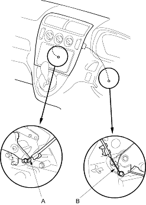
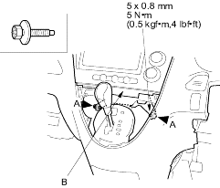
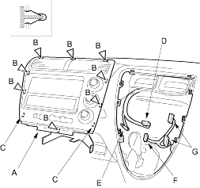

- Put on gloves to protect your hands.
- When prying with a flat-tip screwdriver, wrap it with protective tape and apply protective tape around the related parts, to prevent damage.
- Take care not to scratch the dashboard and related parts.
- Remove these items:
- On manual A/C: Disconnect the mode control cable (A) and air mix control cable (B).

- From the glove box and driver's dashboard lower cover openings, loosen the bolts (A) securing the centre panel (B).
| Fastener Locations |
A  : Bolt, 2 : Bolt, 2 |

- Pull out the centre panel (A) to release the clips (B) and hooks (C) and disconnect the audio unit connector (D), antenna lead (E), heater switch connector (F) and climate control unit connectors (G).
Fastener Locations B : Clip, 8

- Install the panel in the reverse order of removal and make sure each connector is plugged in properly and antenna lead and cables (manual A/C) are connected properly.